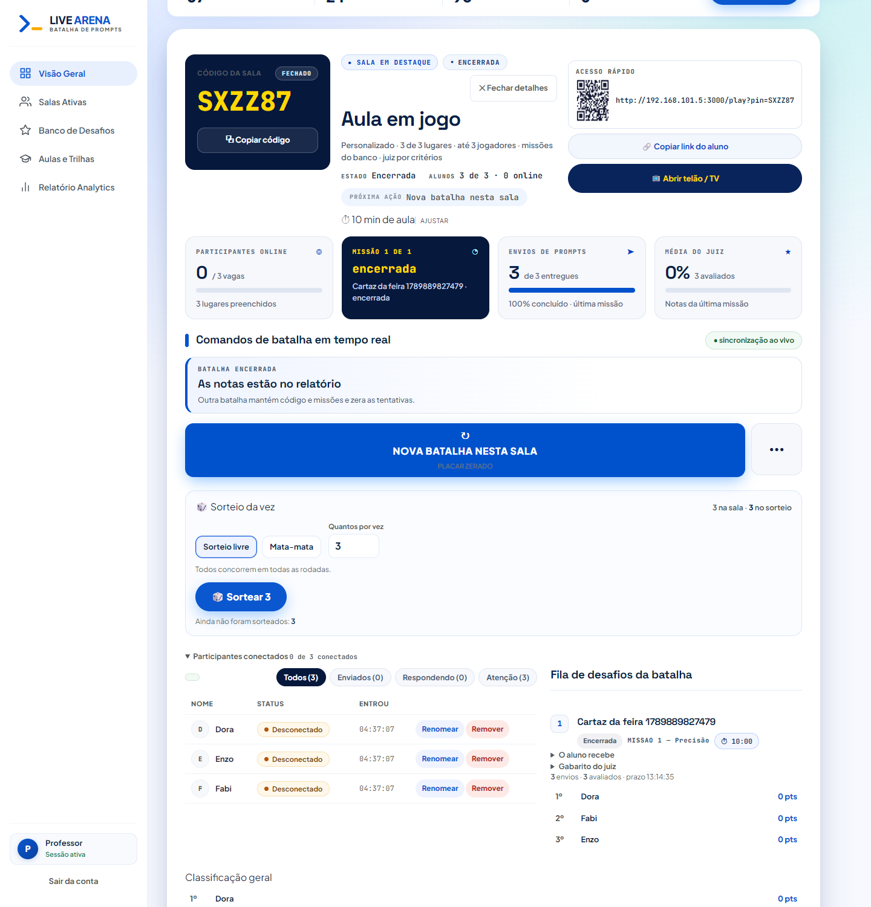
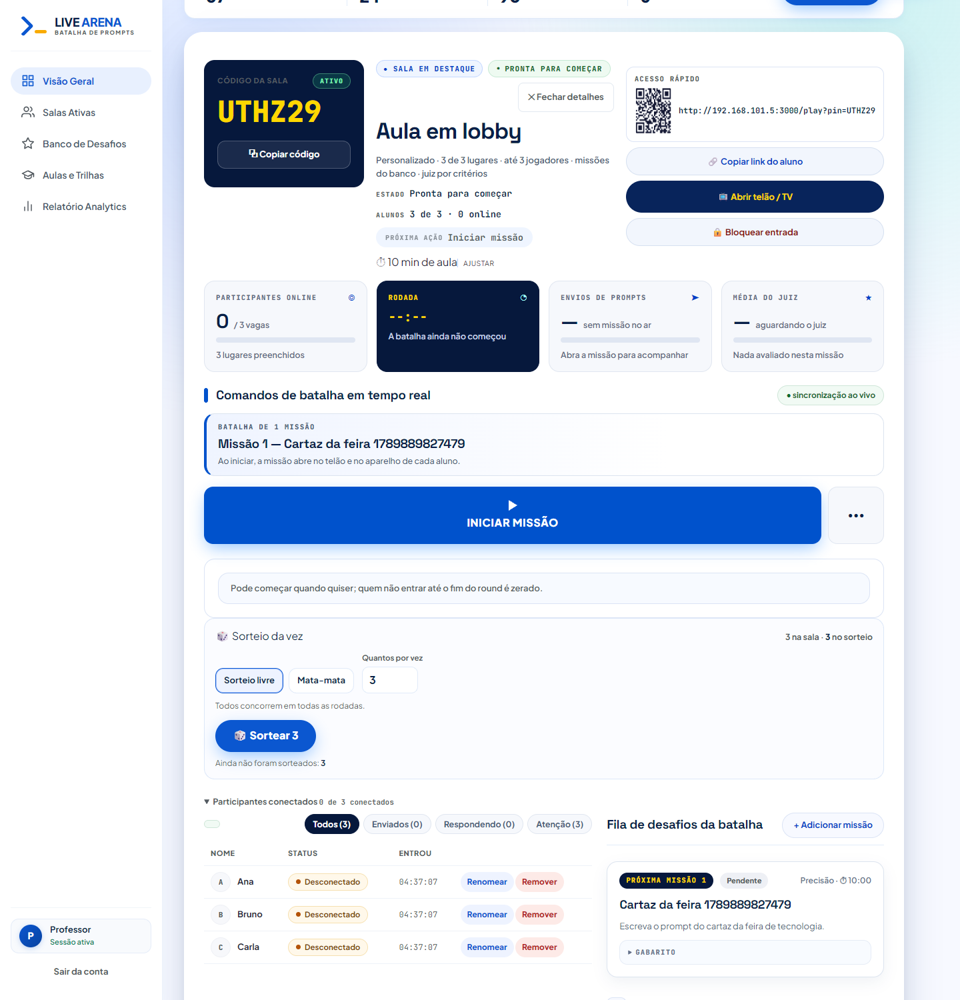
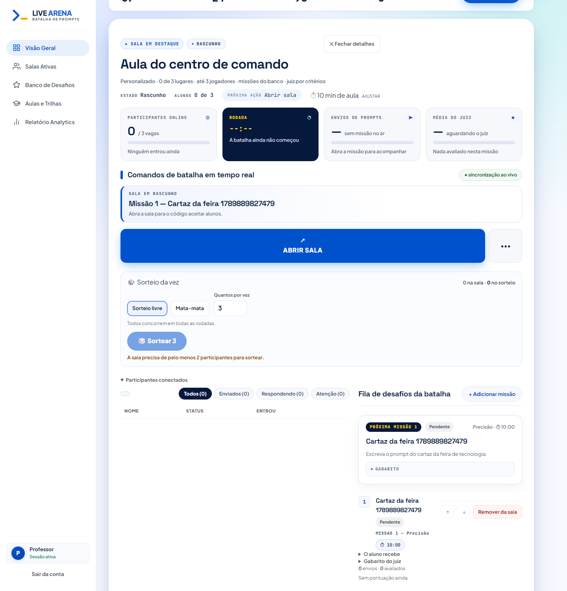
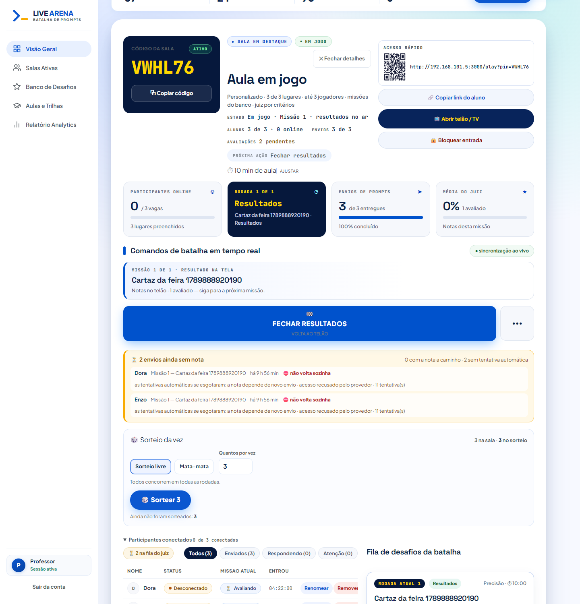

A sala em destaque depois do confronto com a referência clara — 20/09/2026
Mesmo servidor, mesmo banco, quatro estados. Em todas: a faixa de números abre o corpo da sala e a bancada de comandos vem depois dela — a ordem da referência.

01 — Sala encerrada: o selo do código voltou (com o estado "Fechado" ao lado), com QR, copiar link e abrir telão — e sem a porta de trancar. Os cartões mostram a última missão: "Missão 1 de 1 · encerrada", "3 de 3 entregues · 100% concluído · última missão", "0% 3 avaliados".

02 — Lobby: "Pronta para começar" no selo, "Iniciar missão" como próxima ação e o botão grande logo abaixo do anúncio da missão.

03 — Rascunho: sem selo de código, que é o certo — o PIN nasce com a abertura da sala.

04 — Em jogo: rodada no ar, envios 3 de 3, selo do juiz e a fila de desafios na coluna da direita.